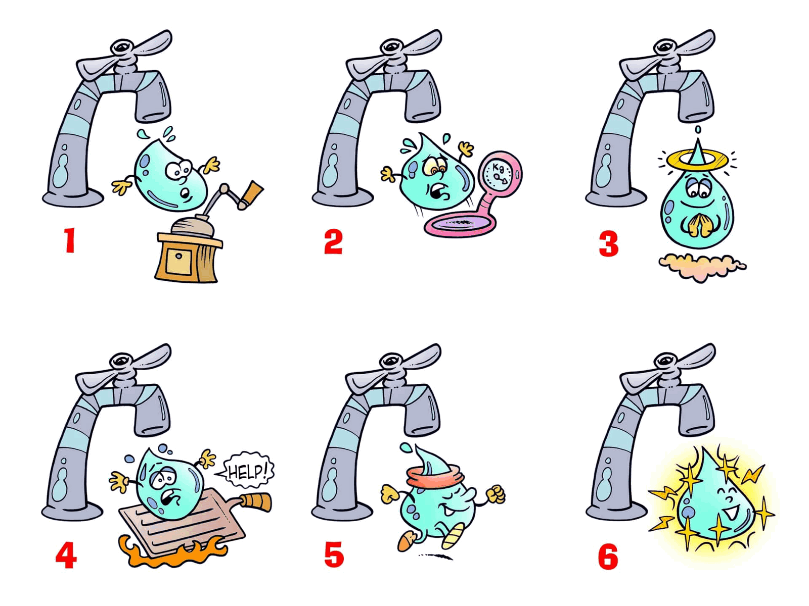

One of our most precious assets comes out of our taps: water, our mains water, which is constantly monitored and safe to drink. However, in the game we are about to play, an lightheartedly funny and also slightly puzzling one, the water that comes out of our six taps is quite different from what we drink and use every day: it is potable, but “playable”!
Here is a list of six types of water in random order: it’s up to you to correctly match each definition to the corresponding picture.